Naš specijalitet
Domaće kiflice
Mekane i sočne kiflice pravljene po tradicionalnom receptu.

Mekane i sočne kiflice pravljene po tradicionalnom receptu.
Domaće kiflice su pravljene po tradicionalnom receptu koji se prenosi sa generacije na generaciju. Svaka kiflica je ručno oblikovana i pečena sa puno ljubavi i pažnje. Koristimo samo kvalitetne sastojke kako bismo osigurali savršen ukus i mekoću koja traje danima.
Kiflice pravimo svakodnevno, tako da su uvek sveže kada stignu do vas. Možete ih naručiti u različitim veličinama i količinama, u zavisnosti od vaših potreba. Idealne su za doručak, užinu ili kao dodatak uz obrok.
Naše kiflice su poznate po svojoj mekoći i sočnosti, a tajna je u posebnom načinu pripreme testa i pečenja. Svaka kiflica je jedinstvena, što im daje poseban šarm i autentičnost.
 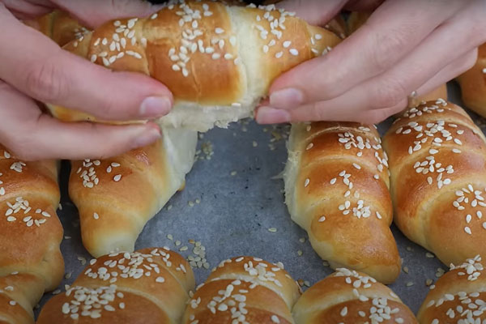
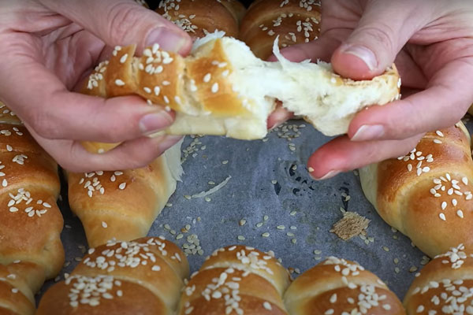
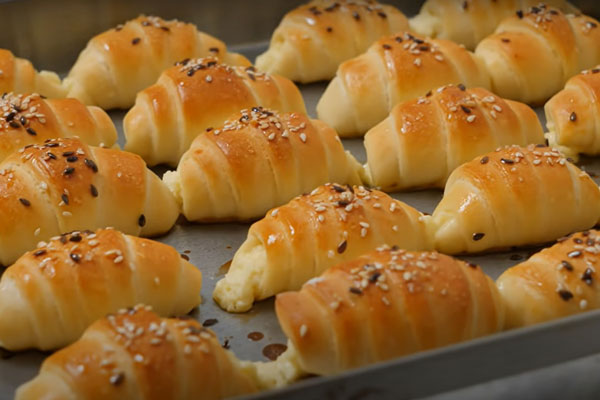
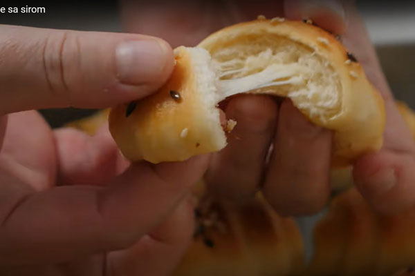
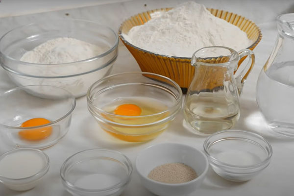
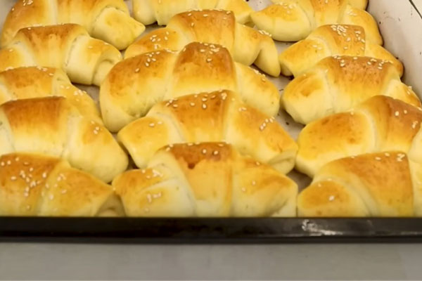
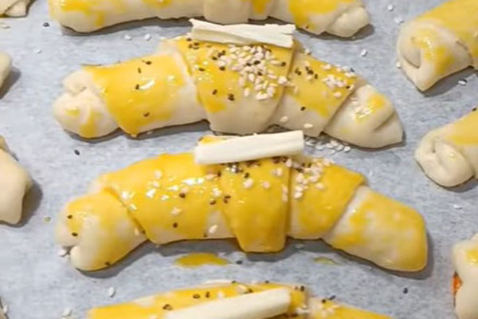
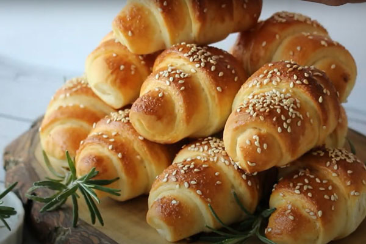
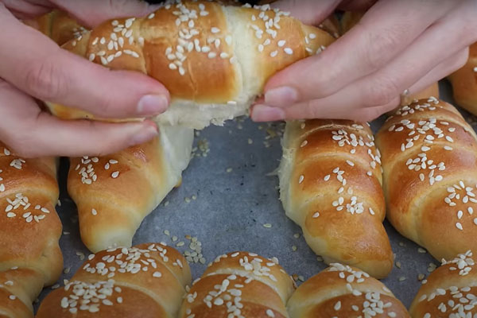
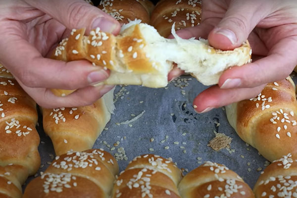
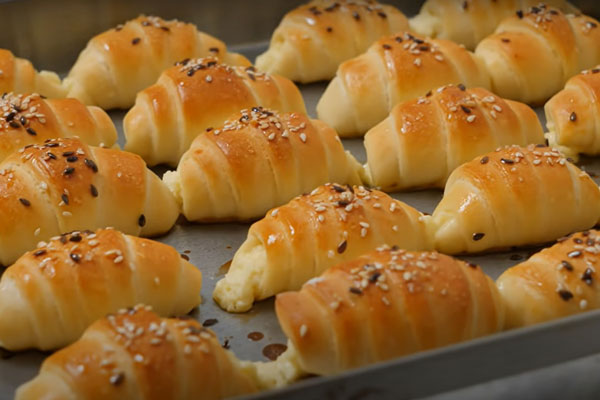
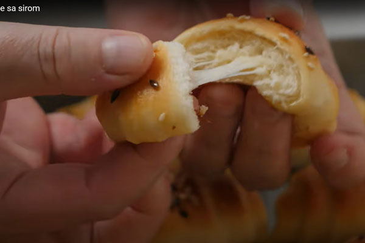
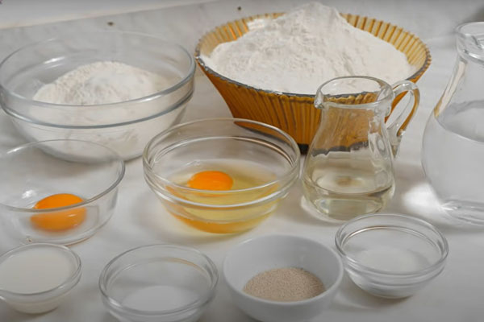
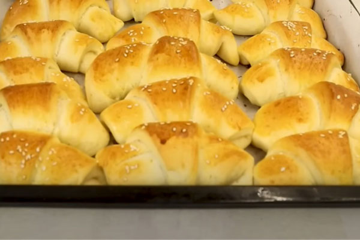
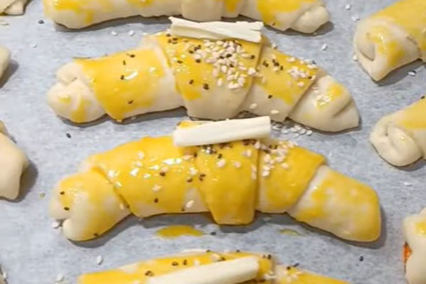
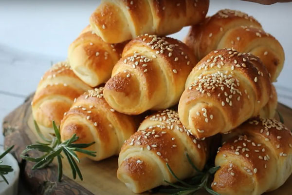
Mekane kiflice punjene kvalitetnim sirom.
Mekane kiflice punjene šunkom i sirom.
Mekane kiflice punjene kulenom
Slatke kiflice punjene ukusnim eurokremom.
Sočne kiflice punjene domaćim džemom od kajsija.
Klasične kiflice bez punjenja, idealne uz obrok.
Pozovite nas ili popunite kontakt formu i uživajte u najukusnijim domaćim kiflicama u Beogradu.
Kontaktirajte nas